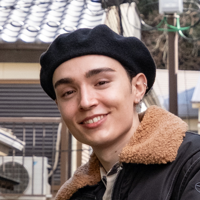

こんにちは！エフェクトアーティストのナダルです。 美術とプログラミングに情熱を傾けています。 幼い頃から描画したりテクノロジーを活用したりしています。 その頃から、ゲームを作ることは私の夢でした。 11歳の時に気晴らしにPowerPointでゲームを制作したり、インテリアデザイン3Dソフトで家を作ったりして過ごした日々は、今でも記憶に残っています。 世界観の構築やゲーム制作は、私の一生の情熱です。
ゲームは人々を結びつけ、楽しみを共有する素晴らしいきっかけになると信じています。 他のアーティストやクリエイターと協力するのが好きです。 メンバーの制作活動や豊かなアイデアの流れ、そして活発なフィードバックが行われるスピード感のある環境で力を発揮できます。 多様な視点から物事を見ることができるので、これは素晴らしい作品を作るために最適な方法だと思います。 いくつかのチームプロジェクトに携わっていて、担当した業務を責任を持って遂行しました。 二つのゲームデモのプロジェクトも管理したことがあります。
強い好奇心を持ち、常に成長を追求しています。 卒業制作で、Blueprints・C++・Niagara・HLSLを用いて、3D背景生成ツールの開発に挑戦しました。 そのおかげで、テクニカル技術を磨いて、エフェクトを作る時に、テクニカルの複雑さがあっても、臆さずに自信を持って取り組めます。
スキル：
ポートフォリオ制作過程